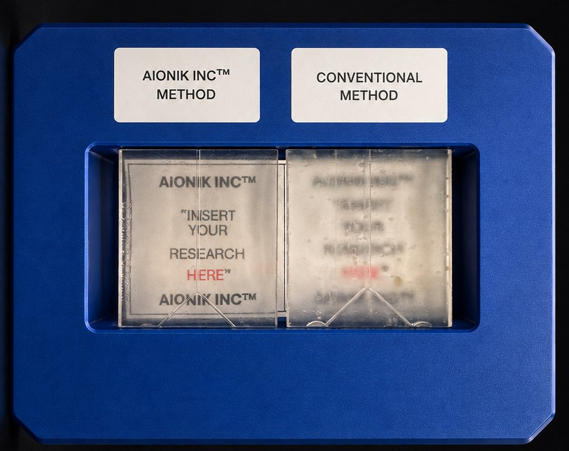
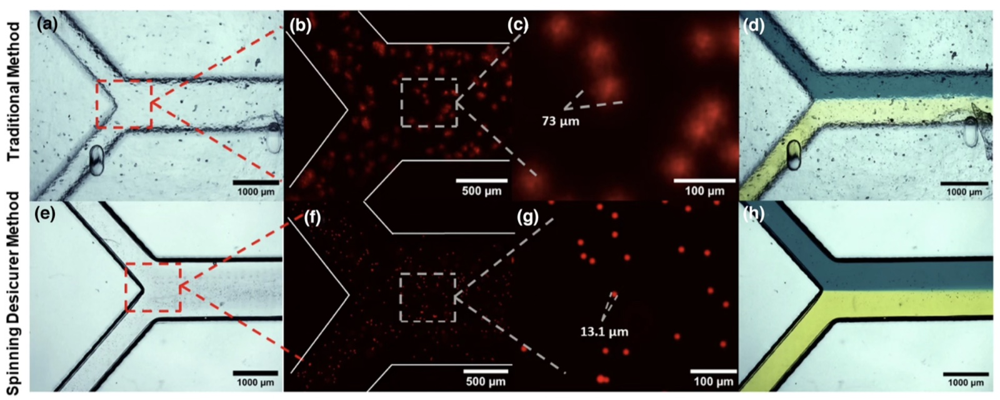
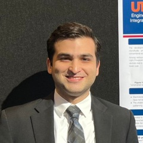

We're bridging that gap.
A post-process for standard and specialized SLA printers that replaces IPA chemical washing entirely, enabling rapid prototyping and manufacturing of high quality, biocompatible microfluidic chips, organoid housings, and applications nobody has built yet because the parts took too long to make.

Every breakthrough starts as a concept, but concepts do not answer questions or save lives. Prototypes do. We are building the technology that turns a researcher's idea into something real in minutes instead of weeks, so the best minds in biomedical science spend less time waiting and more time discovering.
Our patent pending curing process strips away the chemicals, the solvents, and the delays that have slowed micromanufacturing for decades.
Regulators moved off animal testing, demand runs wider than biology, and all eight analyst houses have the market compounding through the next decade.
Regulators set a clock.
Capacity did not move with demand.
Microfluidic chips are still cast by hand. Soft lithography needs a cleanroom to build the mold, then, in rough order of what they cost, a mask aligner, a wafer bonder, an automated coater track, a mask exposer, a plasma system, and a spin coater, plus a vacuum desiccator, a developer bench, hot plates, a curing oven, a profilometer to check what you actually made, and the fume hood and consumables around all of it. It needs someone trained to run the whole chain. That is why the capability lives inside a small number of institutions.
The process itself is slow and operator dependent, with cure conditions that shift batch to batch. And labs prototype in PDMS while manufacturing in thermoplastic, so the device they validate is never the device they ship.
The demand runs wider than biology, and it has to scale with AI.
Regulation set the clock for organ on chip work, but it is not the only pressure. When Microsystems and Nanoengineering surveyed scholars and industry for its ten ground challenges for the field, fabrication ran through the answers. Several of the ten stall not on ideas but on access to fast, high fidelity, biocompatible microfabrication: functional organ on chip reconstruction, affordable point of care diagnostics, precision that survives the print in high performance devices, and the AI guided design to fabrication loop that only closes when iteration is cheap.
Every one of those sits on the same microfluidic and additive foundation we build for. A process that turns a standard printer into a source of clear, biocompatible parts in minutes moves the fabrication half of each problem at once. The pull is not a single market. It is a field wide shift toward tools that let a lab hold an idea in its hands the week it has it, across diagnostics, computing, and medicine alike.
Underneath all of them sits the same dependency: fabrication fast enough to prototype, cheap enough to repeat, consistent enough to automate, and able to scale without switching process. Where our process fits is the rest of this page. How we intend to commercialize it is deliberately not public, and we share that under NDA with investors and partners who need it.
The market is large, and the analysts disagree about how large.
Eight research firms publish a microfluidics market size. For nominally the same market they report figures between $9.4 billion and $41.9 billion, a spread of more than four times. That gap is about scope, whether a report counts diagnostics alone or the full device, component, and instrumentation ecosystem, rather than about growth.
What the eight agree on matters more than what they dispute. All of them project sustained growth, North America leading, and medical and diagnostics as the largest application. Six of the eight put compound growth in double digits, and the two lowest are 8.3 and 8.7 percent. Mordor Intelligence carves out organ on chip as the fastest growing sub technology in the field at 22.7 percent, which is the segment our biocompatible housings serve.
Growth at those rates runs straight into the constraint described above. A market cannot compound at double digits for a decade while the parts it depends on are still cast by hand in a cleanroom. That is the bottleneck, and it is the one we removed.
Figures as published by each firm, with no normalization across differing scope definitions. Base years differ, so these are not strictly like for like. Treat the range as an indication of scale, not as a precise market size.
Eleven steps, two days of hand work, a cleanroom for the mold, and one attempt at the bond.
Soft lithography is the standard way to make a microfluidic chip, and it has been for two decades. What it involves is the reason the capability lives inside a small number of institutions.
A silicon wafer is spin coated with photoresist, baked, exposed through a mask, developed, and silanized to make a mold. Only then does the PDMS get mixed, degassed, poured, cured, cut out, punched, and bonded.
Inlet and outlet holes are punched individually into each slab with a biopsy punch. A torn port or a fragment of debris in the channel is a scrapped chip.
Plasma activation decays within roughly 15 minutes to an hour. Alignment and contact have to happen inside that window, once, with no second attempt.
A finished chip is two pieces held at an interface. That interface is what delaminates under pressure, and it is why these devices are treated as consumable rather than durable.
Two days of work does not mean a chip in two days. A lab that owns a cleanroom can turn a new design in about a week. Most labs do not own one, so the design goes out to a foundry, and the answer comes back in one to twelve weeks depending on the vendor and the complexity. Researchers routinely wait months to hold a design they drew in an afternoon, and every revision starts the wait over.
A research bench starts at $65,000, a production line runs past $1.6 million, and the room bills every year it stays open.
What the alternatives cost.
| Overhead | Per iteration | Ceiling | |
|---|---|---|---|
| PDMS soft lithography | Cleanroom, mask aligner, trained operator | Hours to days in house, weeks by foundry order | Cannot scale to production |
| Thermoplastic injection molding | Mold tooling per design | Weeks, and a new mold for any change | Locks the design before it is validated |
| Glass and silicon | Semiconductor facility access | Weeks | Cost per chip stays high |
| Aionik™ | Desktop printer and our unit | Print runs from 20 to 30 minutes up to 1 or 2 hours depending on device size and printer, multiple chips per plate. Cure is 1 to 3 minutes | Scales to production at the lowest cost per chip, same process throughout |
Every existing option forces a tradeoff between speed and scale. Soft lithography iterates but cannot produce. Molding produces but cannot iterate. We hold both, in one material, with no cleanroom and no tooling.
Where Aionik sits in the chip fabrication ecosystem, route by route →
Most labs own none of this, so they send the design out and buy finished chips. That is not a fabrication method, it is a way of paying for one, which is why it is not in the table. It removes the capital cost and replaces it with a queue: one to twelve weeks per revision, priced per order, with setup and tooling charged against every new design.
The tradeoff is also a bill. A research bench that cannot produce at volume starts at $65,000. A line that can runs $650,000 to $1.67 million in equipment, and the cleanroom the mold step needs costs $250 to $1,000 per square foot to build, depending on how fine the features are, then carries an operating cost every year it stays in service, in energy, filters, maintenance, and recertification.
What a cleanroom is, which industries need one, and what it costs →
Where Aionik sits in the chip fabrication ecosystem, route by route →
Resin was never the obstacle. The cure was, and removing the chemicals from it changed four things at once.
Printing finally caught up. The cure was the last obstacle.
Resin printers now resolve features small enough for microfluidics at a fraction of the cost and time. What kept those parts out of biology was never the resin, though that is where the field has spent its effort, formulating clearer and more biocompatible materials one at a time. The obstacle is the cure. We changed the process, and now get optical clarity and biocompatibility out of affordable, general purpose resins, not the specialized biocompatible formulations the field has been chasing.
Similar quality to PDMS microfluidic chips.
Not the rough finish of traditional polymerization.
Even with resins that are not biocompatible on their own.
Depending on the print.
By removing chemicals from the curing step, our method delivers what resin printing could not before. Core method developed at UTSA — US 2026/0131529 A1, patent pending.

The process works today. What we need is a final device design, lab space, and people.
Five people spanning microfluidics, materials, marketing, and finance.
Founded in San Antonio, Aionik pairs deep microfluidics and materials research with commercial and product experience.
Finance, UTSA. Leads commercial direction from a background in financial consulting and business strategy.
Assistant Professor of Biomedical and Chemical Engineering at UTSA. PhD in chemical and biomolecular engineering from the University of Notre Dame, BS in microelectronics from Peking University. Electrokinetics, micro and nanofluidics, additive manufacturing.
Sun Lab at UTSA ↗Assistant Professor of Practice in Marketing at UTSA. Biology at UC Berkeley, an MBA at UTSA, and a Stanford Innovation and Entrepreneurship Certificate. Genomics and product marketing across biotech and diagnostics.

PhD in biomedical engineering, UTSA. Named inventor on the core patent application. Device architecture, process engineering, and the work of taking the curing system from a working method to a production ready design.
Biomedical engineering, UTSA, with a PhD in chemical engineering. Named inventor on the core patent application. Materials, biocompatibility, and extending the process beyond microfluidic chips.
A published patent application, an exclusive license from the UT System, and results developed at UTSA.
That is the whole argument. What the brief leaves out is the evidence: every source behind every number, the full comparison of fabrication routes, the analyst spread, and the proof figure from the patent application. If you are evaluating this seriously, the full version is the one to read.
The fastest way in is a short call. Leave your details and a note, and we will reach out. We will show you what is built and answer whatever you want to ask about the process.
We read every one and follow up by email, usually within two business days.